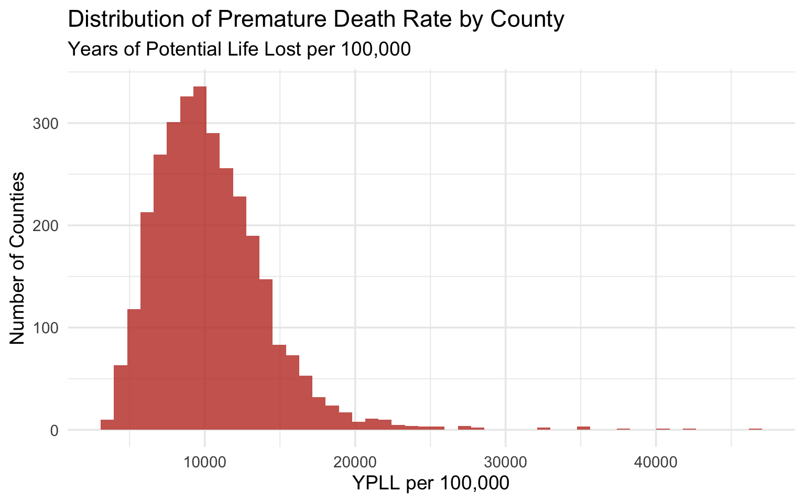
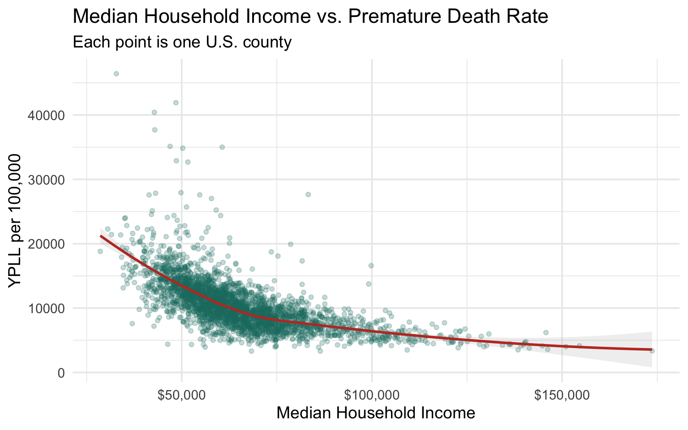
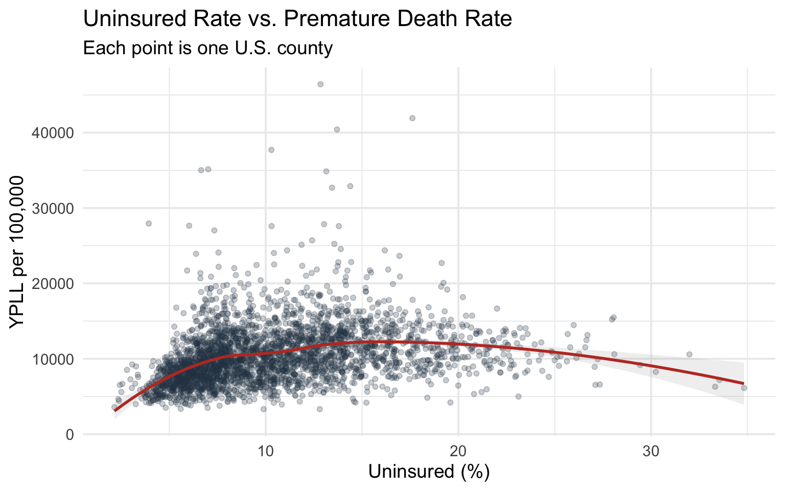
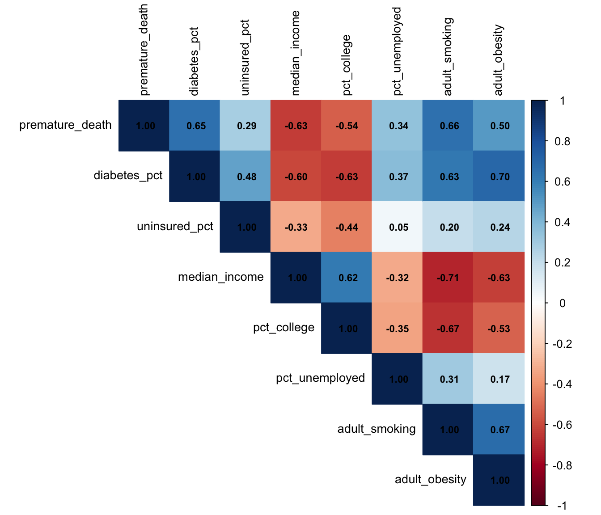

Code
library(tidyverse)
library(janitor)
library(skimr)
library(corrplot)
library(broom)
library(gtsummary)Premature death is measured as Years of Potential Life Lost (YPLL) before age 75 and varies widely across U.S. counties. This analysis explores how key structural factors such as income, health insurance coverage, educational attainment, and employment are associated with premature mortality. Understanding these relationships is beneficial in informing public health policy and resource allocation by identifying structural conditions linked to higher risk of early death.
Research Question: How do county-level socioeconomic factors predict premature death rates in the United States?
This is a county-level (ecological) analysis, therefore the pattern describe counties, not individuals. I explore this question using the 2025 County Health Rankings & Roadmaps data through exploratory visualization, correlation analysis, and multiple linear regression.
library(tidyverse)
library(janitor)
library(skimr)
library(corrplot)
library(broom)
library(gtsummary)The County Health Rankings CSV has two header rows: the first with human-readable names (“Premature Death raw value”) and the second with variable codes (“v001_rawvalue”). To ensure consistent variable naming, I skipped the first header row and used the coded variable names. They are also are easier to work with programmatically.
The file contains 796 columns across 3,200+ counties.
chr_raw <- read_csv(
"data-raw/analytic_data2025_v3.csv",
skip = 1,
na = c("", "NA"),
show_col_types = FALSE
) |>
clean_names()
cat("Rows:", nrow(chr_raw), "| Columns:", ncol(chr_raw))Rows: 3204 | Columns: 796Out of 796 columns, I selected eight measures that are relevant to the research question. The table below maps the coded column names to what they actually represent.
| Code | Measure | Units |
|---|---|---|
| v001 | Premature death | YPLL per 100,000 |
| v060 | Diabetes prevalence | Proportion |
| v085 | Uninsured | Proportion |
| v063 | Median household income | Dollars |
| v069 | Some college | Proportion |
| v023 | Unemployment | Proportion |
| v009 | Adult smoking | Proportion |
| v011 | Adult obesity | Proportion |
health_df <- chr_raw |>
# Row with countycode "000" is the state-level summary — remove these
filter(countycode != "000") |>
select(
fips = fipscode,
state = state,
county = county,
premature_death = v001_rawvalue,
diabetes_pct = v060_rawvalue,
uninsured_pct = v085_rawvalue,
median_income = v063_rawvalue,
pct_college = v069_rawvalue,
pct_unemployed = v023_rawvalue,
adult_smoking = v009_rawvalue,
adult_obesity = v011_rawvalue
) |>
mutate(
across(premature_death:adult_obesity, as.numeric)
)
cat("Counties selected:", nrow(health_df))Counties selected: 3152Before dropping anything from the dataset, I wanted to see which variables have missing values and how many. This helps decide whether to drop rows, impute, or accept the gaps.
missing_summary <- health_df |>
summarise(across(everything(), ~sum(is.na(.)))) |>
pivot_longer(
everything(),
names_to = "variable",
values_to = "n_missing"
) |>
mutate(pct_missing = round(n_missing / nrow(health_df) * 100, 1)) |>
arrange(desc(n_missing))
missing_summary# A tibble: 11 × 3
variable n_missing pct_missing
<chr> <int> <dbl>
1 premature_death 64 2
2 pct_unemployed 10 0.3
3 uninsured_pct 9 0.3
4 median_income 9 0.3
5 pct_college 9 0.3
6 diabetes_pct 8 0.3
7 adult_smoking 8 0.3
8 adult_obesity 8 0.3
9 fips 0 0
10 state 0 0
11 county 0 0 Based on the missingness (see above), here’s what I decided to do:
lm() handles this with complete-case analysis by default, which means it will only use rows where all variables in the model are present. For the first round of analysis, I decided not to impute.health_clean <- health_df |>
drop_na(premature_death) |>
mutate(
diabetes_pct = diabetes_pct * 100,
uninsured_pct = uninsured_pct * 100,
pct_college = pct_college * 100,
pct_unemployed = pct_unemployed * 100,
adult_smoking = adult_smoking * 100,
adult_obesity = adult_obesity * 100
)
cat(
"Counties retained:", nrow(health_clean), "\n",
"Counties dropped:", nrow(health_df) - nrow(health_clean),
"(missing premature death data)\n"
)Counties retained: 3088
Counties dropped: 64 (missing premature death data)# Save for use in other scripts or the Shiny dashboard
write_csv(health_clean, "data-processed/health_clean.csv")I started the analysis by taking a broad look at all the numeric variables, their ranges, means, and how spread out they are.
health_clean |>
select(premature_death:adult_obesity) |>
skim()| Name | select(health_clean, prem… |
| Number of rows | 3088 |
| Number of columns | 8 |
| _______________________ | |
| Column type frequency: | |
| numeric | 8 |
| ________________________ | |
| Group variables | None |
Variable type: numeric
| skim_variable | n_missing | complete_rate | mean | sd | p0 | p25 | p50 | p75 | p100 | hist |
|---|---|---|---|---|---|---|---|---|---|---|
| premature_death | 0 | 1 | 10394.76 | 3831.64 | 3315.25 | 7737.86 | 9824.69 | 12369.43 | 46417.85 | ▇▃▁▁▁ |
| diabetes_pct | 8 | 1 | 11.17 | 2.30 | 6.00 | 9.50 | 10.90 | 12.60 | 21.50 | ▃▇▃▁▁ |
| uninsured_pct | 8 | 1 | 10.46 | 4.63 | 2.15 | 6.93 | 9.42 | 13.15 | 34.82 | ▇▇▂▁▁ |
| median_income | 8 | 1 | 65482.93 | 16527.33 | 28579.00 | 54548.25 | 62842.50 | 73010.00 | 173655.00 | ▅▇▁▁▁ |
| pct_college | 8 | 1 | 58.97 | 11.60 | 16.81 | 51.32 | 58.93 | 67.05 | 93.21 | ▁▂▇▆▁ |
| pct_unemployed | 0 | 1 | 3.60 | 1.21 | 1.14 | 2.81 | 3.42 | 4.16 | 17.27 | ▇▂▁▁▁ |
| adult_smoking | 8 | 1 | 18.01 | 3.88 | 5.90 | 15.60 | 17.80 | 20.40 | 38.30 | ▁▇▅▁▁ |
| adult_obesity | 8 | 1 | 37.97 | 4.63 | 17.70 | 35.40 | 38.50 | 41.10 | 53.00 | ▁▂▇▇▁ |
Before modeling, I wanted to see what the outcome variable looks like. Is it roughly normal? Are there any extreme outliers?
ggplot(health_clean, aes(x = premature_death)) +
geom_histogram(bins = 50, fill = "#c0392b", alpha = 0.8) +
labs(
title = "Distribution of Premature Death Rate by County",
subtitle = "Years of Potential Life Lost per 100,000",
x = "YPLL per 100,000",
y = "Number of Counties"
) +
theme_minimal(base_size = 14)
This is the relationship I’m most interested in. Income is often considered a “fundamental cause” of health in public health literature. In the U.S., income shapes access to almost everything ranging from housing, food, healthcare to safe environments/neighborhoods.
ggplot(health_clean, aes(x = median_income, y = premature_death)) +
geom_point(alpha = 0.25, color = "#1a7a6d", size = 1.5) +
geom_smooth(method = "loess", color = "#c0392b", se = TRUE, alpha = 0.15) +
scale_x_continuous(labels = scales::dollar) +
labs(
title = "Median Household Income vs. Premature Death Rate",
subtitle = "Each point is one U.S. county",
x = "Median Household Income",
y = "YPLL per 100,000"
) +
theme_minimal(base_size = 14)`geom_smooth()` using formula = 'y ~ x'Warning: Removed 8 rows containing non-finite outside the scale range
(`stat_smooth()`).Warning: Removed 8 rows containing missing values or values outside the scale range
(`geom_point()`).
Insurance coverage is another factor to consider. Counties with more uninsured residents may have less access to preventive care and treatment.
ggplot(health_clean, aes(x = uninsured_pct, y = premature_death)) +
geom_point(alpha = 0.25, color = "#2c3e50", size = 1.5) +
geom_smooth(method = "loess", color = "#c0392b", se = TRUE, alpha = 0.15) +
labs(
title = "Uninsured Rate vs. Premature Death Rate",
subtitle = "Each point is one U.S. county",
x = "Uninsured (%)",
y = "YPLL per 100,000"
) +
theme_minimal(base_size = 14)`geom_smooth()` using formula = 'y ~ x'Warning: Removed 8 rows containing non-finite outside the scale range
(`stat_smooth()`).Warning: Removed 8 rows containing missing values or values outside the scale range
(`geom_point()`).
Before putting variables into a regression together, I want to check how strongly they correlate with each other. If two predictors are highly correlated (roughly r > 0.7), including both could cause multicollinearity. It means the predictors are so closely related that the model has trouble separating which one is actually driving the effect.
cor_matrix <- health_clean |>
select(premature_death:adult_obesity) |>
cor(use = "pairwise.complete.obs")
corrplot(
cor_matrix,
method = "color",
type = "upper",
tl.col = "black",
tl.cex = 0.85,
addCoef.col = "black",
number.cex = 0.7
)
I used multiple linear regression to see how each socioeconomic factor relates to premature death rate when other factors are accounted for.
The model: premature_death ~ median_income + uninsured_pct + pct_college + pct_unemployed + diabetes_pct
I included diabetes prevalence because it captures some of the chronic disease burden in a county. I left smoking and obesity out because they are highly correlated with the other predictors and with each other, which would cause multicollinearity issue.
model <- lm(
premature_death ~ median_income + uninsured_pct +
pct_college + pct_unemployed + diabetes_pct,
data = health_clean
)
# Model summary: R-squared, F-statistic, etc.
glance(model) |>
select(r.squared, adj.r.squared, sigma, statistic, p.value, nobs)# A tibble: 1 × 6
r.squared adj.r.squared sigma statistic p.value nobs
<dbl> <dbl> <dbl> <dbl> <dbl> <int>
1 0.526 0.525 2642. 681. 0 3080This table shows the estimated effect of each predictor on premature death rate, along with 95% confidence intervals and p-values. Statistically significant predictors (p < 0.05) are bolded.
model |>
tbl_regression(
label = list(
median_income ~ "Median Household Income ($)",
uninsured_pct ~ "Uninsured (%)",
pct_college ~ "Some College (%)",
pct_unemployed ~ "Unemployment (%)",
diabetes_pct ~ "Diabetes Prevalence (%)"
)
) |>
bold_p()| Characteristic | Beta | 95% CI | p-value |
|---|---|---|---|
| Median Household Income ($) | -0.08 | -0.09, -0.07 | <0.001 |
| Uninsured (%) | -44 | -68, -20 | <0.001 |
| Some College (%) | -25 | -36, -13 | <0.001 |
| Unemployment (%) | 183 | 97, 269 | <0.001 |
| Diabetes Prevalence (%) | 677 | 617, 736 | <0.001 |
| Abbreviation: CI = Confidence Interval | |||